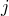
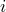
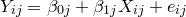
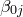
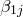
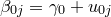
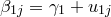
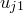
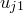
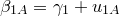

| 階層的線形モデル（HLM）について |
| 階層的線形モデル（HLM）について |
学級ごとに回帰式を当てはめるという発想自体はよいのであるが，この方法にもまだ問題は残る。 それは，各学級のデータを全く別個に扱っているということに起因するものである。 異なる学級といっても，互いに共通した特徴が全くないわけではない。 つまり，学級Aについて知ろうと思えば，学級Bや学級Cといった他の学級の持っている情報も何らかの役に立つはずなのである。 実際，1つの学級に含まれる子どもはせいぜい数十名であり，相関関係について確かなことを主張するためにはデータが少ないと言わざるを得ない1。 また，この例では学級がたった3つしかないが，もっと大規模な調査で対象となった学級の数が何十，何百もある場合はどうなるだろう。 それぞれの学級のデータに対して回帰分析をいちいち実行するということ自体が非常に手間であるし，各学級について得られた結果を総合して何が言えるのかということが見えづらい。
階層的線形モデル（Hierarchical Linear Models: HLM）は，まさにこうしたデータを適切に分析し有用な情報を取り出すために開発されたものである。
上記の例のようなデータを分析する際，HLMでは以下のようなモデルを考える。 まず，各学級ごとの回帰式を考える。 つまり，学級の子どもに対して
|  | (5) |
なるモデルを考える。 ここまでは，先ほどのように学級ごとに回帰分析を行うのと特に変わりはない。
次に，各学級の切片と傾きについてさらに次のようなモデルを考える。
|  | (6) | ||
|  | (7) |
つまり，全ての学級の切片および傾きを平均したものがおよびによって表され，各学級の切片および傾きはその値からのずれ（ および）を足し合わせたものとして表現されるということである。 例えば，学級Aにおける切片と傾きはそれぞれ
および）を足し合わせたものとして表現されるということである。 例えば，学級Aにおける切片と傾きはそれぞれ
| (8) | |||
|  | (9) |
となる。
このような2段階のモデル化を行うことで，切片や傾きについて
平均的な値
各学級の値（平均的な値+平均からのずれ）
という2種類の情報を得ることができる。 しかも，HLMでは1回の分析を実行するだけでこれらすべての情報を得ることができる。 すなわち，学級が数十あるとしても，それらの切片や傾きの情報を得るのに数十回の分析を繰り返す必要はない。
Footnotes
| 階層的線形モデル（HLM）について |